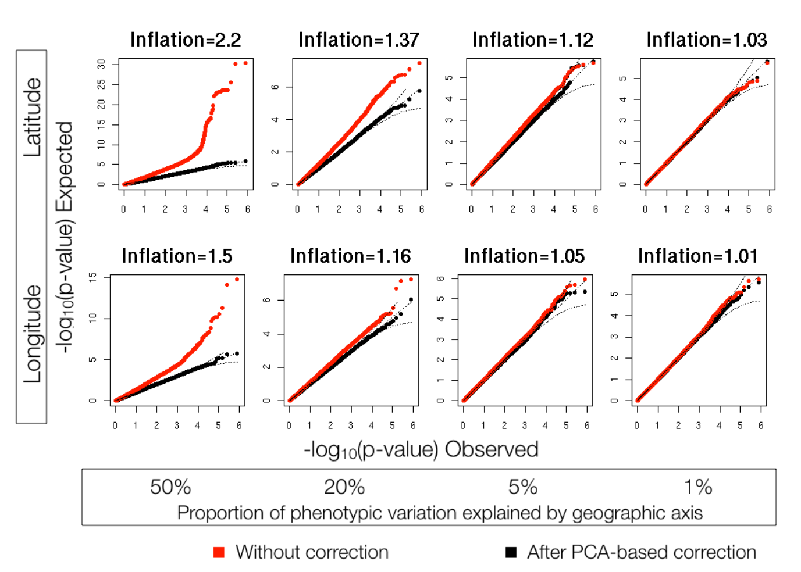

<!DOCTYPE html>
<html lang="en">
  <head>
    <meta charset="utf-8" />
    <meta name="viewport" content="width=device-width, initial-scale=1.0, maximum-scale=1.0, user-scalable=no" />

    <title></title>
    <link rel="stylesheet" href="dist/reveal.css" />
    <link rel="stylesheet" href="css/mattropolis.css" id="theme" />
    <link rel="stylesheet" href="plugin/highlight/zenburn.css" />
	<link rel="stylesheet" href="css/layout.css" />
	<link rel="stylesheet" href="plugin/customcontrols/style.css">
	<link rel="stylesheet" href="plugin/chalkboard/style.css">


    <script defer src="dist/fontawesome/all.min.js"></script>

	<script type="text/javascript">
		var forgetPop = true;
		function onPopState(event) {
			if(forgetPop){
				forgetPop = false;
			} else {
				parent.postMessage(event.target.location.href, "app://obsidian.md");
			}
        }
		window.onpopstate = onPopState;
		window.onmessage = event => {
			if(event.data == "reload"){
				window.document.location.reload();
			}
			forgetPop = true;
		}

		function fitElements(){
			const itemsToFit = document.getElementsByClassName('fitText');
			for (const item in itemsToFit) {
				if (Object.hasOwnProperty.call(itemsToFit, item)) {
					var element = itemsToFit[item];
					fitElement(element,1, 1000);
					element.classList.remove('fitText');
				}
			}
		}

		function fitElement(element, start, end){

			let size = (end + start) / 2;
			element.style.fontSize = `${size}px`;

			if(Math.abs(start - end) < 1){
				while(element.scrollHeight > element.offsetHeight){
					size--;
					element.style.fontSize = `${size}px`;
				}
				return;
			}

			if(element.scrollHeight > element.offsetHeight){
				fitElement(element, start, size);
			} else {
				fitElement(element, size, end);
			}		
		}


		document.onreadystatechange = () => {
			fitElements();
			if (document.readyState === 'complete') {
				if (window.location.href.indexOf("?export") != -1){
					parent.postMessage(event.target.location.href, "app://obsidian.md");
				}
				if (window.location.href.indexOf("print-pdf") != -1){
					let stateCheck = setInterval(() => {
						clearInterval(stateCheck);
						window.print();
					}, 250);
				}
			}
	};


        </script>
  </head>
  <body>
    <div class="reveal">
      <div class="slides"><section  data-markdown><script type="text/template"><!-- .slide: class="drop" -->
<div class="" style="position: absolute; left: 0px; top: 0px; height: 700px; width: 960px; min-height: 700px; display: flex; flex-direction: column; align-items: center; justify-content: center" absolute="true">

<div class="callout callout-color1">
<div class="callout-title">
<div class="callout-icon">

<i class="fas fa-clipboard-list" ></i>


</div>
<div class="callout-title-inner">

Abstract

</div>
</div>
<div class="callout-content">

Understanding the genetic structure of human populations is of fundamental interest to medical, forensic and anthropological sciences. Advances in high-throughput genotyping technology have markedly improved our understanding of global patterns of human genetic variation and suggest the potential to use large samples to uncover variation among closely spaced populations. Here we characterize genetic variation in a sample of 3,000 European individuals genotyped at over half a million variable DNA sites in the human genome. Despite low average levels of genetic differentiation among Europeans, we find a close correspondence between genetic and geographic distances; indeed, <mark>a geographical map of Europe arises naturally as an efficient two-dimensional summary of genetic variation in Europeans</mark>. The results emphasize that <mark>when mapping the genetic basis of a disease phenotype, spurious associations can arise if genetic structure is not properly accounted for</mark>. In addition, the results are relevant to the prospects of genetic ancestry testing; <mark>an individual's DNA can be used to infer their geographic origin with surprising accuracy-often to within a few hundred kilometres.</mark>

</div>
</div>


<div class="footnotes" role="doc-endnotes">
<ol>
<li id="fn:1" role="doc-endnote" class="footnote"><p>

Novembre, John, Toby Johnson, Katarzyna Bryc, Zoltán Kutalik, Adam R. Boyko, Adam Auton, Amit Indap, et al. 2008. “Genes Mirror Geography within Europe.” _Nature_ 456 (7218): 98–101. [https://doi.org/10.1038/nature07331](https://doi.org/10.1038/nature07331).

</p></li></ol>
</div>
</div></script></section><section  data-markdown><script type="text/template"><!-- .slide: class="drop" -->
<div class="" style="position: absolute; left: 0px; top: 0px; height: 700px; width: 960px; min-height: 700px; display: flex; flex-direction: column; align-items: center; justify-content: center" absolute="true">

<div class="callout callout-color4">
<div class="callout-title">
<div class="callout-icon">

<i class="fas fa-question-circle" ></i>


</div>
<div class="callout-title-inner">

How are the geographical location of individuals determined?

</div>
</div>
<div class="callout-content">

</div>
</div>
</div></script></section><section  data-markdown><script type="text/template"><!-- .slide: class="drop" -->
<div class="" style="position: absolute; left: 0px; top: 0px; height: 700px; width: 960px; min-height: 700px; display: flex; flex-direction: column; align-items: center; justify-content: center" absolute="true">

<div class="callout callout-color9">
<div class="callout-title">
<div class="callout-icon">

<i class="fas fa-quote-left" ></i>


</div>
<div class="callout-title-inner">

After removing SNPs with low-quality scores, we applied various stringency criteria to avoid sampling individuals from outside of Europe, to create more even sample sizes across Europe, to exclude individuals with grandparental ancestry from more than one location, and to avoid potential complications of SNPs in high linkage disequilibrium (see Methods and Supplementary Table 3).

</div>
</div>
<div class="callout-content">

</div>
</div>
</div></script></section><section  data-markdown><script type="text/template"><!-- .slide: class="drop" -->
<div class="" style="position: absolute; left: 0px; top: 0px; height: 700px; width: 960px; min-height: 700px; display: flex; flex-direction: column; align-items: center; justify-content: center" absolute="true">

<div class="callout callout-color9">
<div class="callout-title">
<div class="callout-icon">

<i class="fas fa-quote-left" ></i>


</div>
<div class="callout-title-inner">

it is not clear to what extent populations within continental regions exist as discrete genetic clusters versus as a genetic continuum,

</div>
</div>
<div class="callout-content">

</div>
</div>

- can you draw two "toy" haplotype networks to describe the two hypotheses?
</div></script></section><section  data-markdown><script type="text/template"><!-- .slide: class="drop" -->
<div class="" style="position: absolute; left: 0px; top: 0px; height: 700px; width: 960px; min-height: 700px; display: flex; flex-direction: column; align-items: center; justify-content: center" absolute="true">

<div class="callout callout-color4">
<div class="callout-title">
<div class="callout-icon">

<i class="fas fa-question-circle" ></i>


</div>
<div class="callout-title-inner">

Question

</div>
</div>
<div class="callout-content">

1. What is the signal from the genotype (e.g., fixed difference between groups, or epigenetic information) that allows the authors to recovery the geographical map?

1. &shy;<!-- .element: class="fragment" data-fragment-index="1" -->What's the dimension of that information? What did the authors do in order to construct a 2D map?

</div>
</div>
</div>

<aside class="notes"><ul>
<li>the raw data is a genotype matrix at ~500,000 sites for 3000 individuals, i.e., 3000x500000 matrix.</li>
<li>each individual can be viewed as a dot in the 500,000 dimensional space.</li>
<li>finding the eigenvectors and eigenvalues of this matrix allows one to identify combinations of those sites that maximally explain the genetic variation across individuals.</li>
<li>(Euclidean) distance between individuals in the genotype space describe their genetic distance, which corresponds to their (current) geographical distance</li>
</ul>
</aside></script></section><section  data-markdown><script type="text/template"><!-- .slide: class="drop" -->
<div class="" style="position: absolute; left: 0px; top: 0px; height: 700px; width: 960px; min-height: 700px; display: flex; flex-direction: column; align-items: center; justify-content: center" absolute="true">

<aside class="notes"><div class="callout callout-color4">
<div class="callout-title">
<div class="callout-icon">

<p><i class="fas fa-question-circle" ></i></p>
</div>
<div class="callout-title-inner">

<p>Question</p>
</div>
</div>
<div class="callout-content">

<p>Conversely, why would people&#39;s geographical location provide &quot;an efficient two-dimensional summary&quot; of genetic variation in Europeans?</p>
</div>
</div>
</div></aside></script></section><section  data-markdown><script type="text/template"><!-- .slide: class="drop" -->
<div class="" style="position: absolute; left: 0px; top: 0px; height: 700px; width: 960px; min-height: 700px; display: flex; flex-direction: column; align-items: center; justify-content: center" absolute="true">

<div class="callout callout-color9">
<div class="callout-title">
<div class="callout-icon">

<i class="fas fa-quote-left" ></i>


</div>
<div class="callout-title-inner">

Quote

</div>
</div>
<div class="callout-content">

The overall geographic pattern in Fig. 1a fits the theoretical expectation for models in which genetic similarity decays with distance in a two-dimensional habitat, as opposed to expectations for models involving discrete well-differentiated populations. Indeed, in these data genetic correlation between pairs of individuals tends to decay with distance (Fig. 1c). For spatially structured data, theory predicts the top two principal components (PCs 1 and 2) to be correlated with perpendicular geographic axes9, which is what we observe (r2 5 0.71 for PC1 versus latitude; r2 5 0.72 for PC2 versus longitude; after rotation, r2 5 0.77 for ‘north–south’ in PC-space versus latitude, and r2 5 0.78 for ‘east–west’ in PC-space versus longitude). In contrast, when there are K discrete populations sampled, one expects discrete clusters to be separated out along K 2 1 of the top PCs8. In our analysis, neither the first two PCs, nor subsequent PCs, separate clusters as one would expect for a set of discrete, welldifferentiated populations (see ref. 8 for examples).

</div>
</div>
</div></script></section><section  data-markdown><script type="text/template"><!-- .slide: class="drop" -->
<div class="" style="position: absolute; left: 0px; top: 0px; height: 700px; width: 960px; min-height: 700px; display: flex; flex-direction: column; align-items: center; justify-content: center" absolute="true">



Supplementary figure 4
</div></script></section><section  data-markdown><script type="text/template"><!-- .slide: class="drop" -->
<div class="" style="position: absolute; left: 0px; top: 0px; height: 700px; width: 960px; min-height: 700px; display: flex; flex-direction: column; align-items: center; justify-content: center" absolute="true">

<div class="callout callout-color4">
<div class="callout-title">
<div class="callout-icon">

<i class="fas fa-question-circle" ></i>


</div>
<div class="callout-title-inner">

Homework (optional)

</div>
</div>
<div class="callout-content">

Has such methods been applied to Asian countries, including China? If you can find such literature, please share in the WeChat group. Hint: look for papers that cited the paper we just read.

</div>
</div>
</div></script></section><section  data-markdown><script type="text/template"><!-- .slide: class="drop" -->
<div class="" style="position: absolute; left: 0px; top: 0px; height: 700px; width: 960px; min-height: 700px; display: flex; flex-direction: column; align-items: center; justify-content: center" absolute="true">

<div class="callout callout-color4">
<div class="callout-title">
<div class="callout-icon">

<i class="fas fa-question-circle" ></i>


</div>
<div class="callout-title-inner">

Bonus discussion question:

</div>
</div>
<div class="callout-content">

What is a gene?

</div>
</div>
</div></script></section></div>
    </div>

    <script src="dist/reveal.js"></script>

    <script src="plugin/markdown/markdown.js"></script>
    <script src="plugin/highlight/highlight.js"></script>
    <script src="plugin/zoom/zoom.js"></script>
    <script src="plugin/notes/notes.js"></script>
    <script src="plugin/math/math.js"></script>
	<script src="plugin/mermaid/mermaid.js"></script>
	<script src="plugin/chart/chart.min.js"></script>
	<script src="plugin/chart/plugin.js"></script>
	<script src="plugin/menu/menu.js"></script>
	<script src="plugin/customcontrols/plugin.js"></script>
	<script src="plugin/chalkboard/plugin.js"></script>

    <script>
      function extend() {
        var target = {};
        for (var i = 0; i < arguments.length; i++) {
          var source = arguments[i];
          for (var key in source) {
            if (source.hasOwnProperty(key)) {
              target[key] = source[key];
            }
          }
        }
        return target;
      }

	  function isLight(color) {
		let hex = color.replace('#', '');

		// convert #fff => #ffffff
		if(hex.length == 3){
			hex = `${hex[0]}${hex[0]}${hex[1]}${hex[1]}${hex[2]}${hex[2]}`;
		}

		const c_r = parseInt(hex.substr(0, 2), 16);
		const c_g = parseInt(hex.substr(2, 2), 16);
		const c_b = parseInt(hex.substr(4, 2), 16);
		const brightness = ((c_r * 299) + (c_g * 587) + (c_b * 114)) / 1000;
		return brightness > 155;
	}

	var bgColor = getComputedStyle(document.documentElement).getPropertyValue('--r-background-color').trim();
	var isLight = isLight(bgColor);

	if(isLight){
		document.body.classList.add('has-light-background');
	} else {
		document.body.classList.add('has-dark-background');
	}

      // default options to init reveal.js
      var defaultOptions = {
        controls: true,
        progress: true,
        history: true,
        center: true,
        transition: 'default', // none/fade/slide/convex/concave/zoom
        plugins: [
          RevealMarkdown,
          RevealHighlight,
          RevealZoom,
          RevealNotes,
          RevealMath.MathJax3,
		  RevealMermaid,
		  RevealChart,
		  RevealCustomControls,
		  RevealMenu,
		  RevealChalkboard, 
        ],


    	allottedTime: 120 * 1000,

		mathjax3: {
			mathjax: 'plugin/math/mathjax/tex-mml-chtml.js',
		},
		markdown: {
		  gfm: true,
		  mangle: true,
		  pedantic: false,
		  smartLists: false,
		  smartypants: false,
		},

		mermaid: {
			theme: isLight ? 'default' : 'dark',
		},

		customcontrols: {
			controls: [
				{ icon: '<i class="fa fa-pen-square"></i>',
				title: 'Toggle chalkboard (B)',
				action: 'RevealChalkboard.toggleChalkboard();'
				},
				{ icon: '<i class="fa fa-pen"></i>',
				title: 'Toggle notes canvas (C)',
				action: 'RevealChalkboard.toggleNotesCanvas();'
				},
			]
		},
		menu: {
			loadIcons: false
		}
      };

      // options from URL query string
      var queryOptions = Reveal().getQueryHash() || {};

      var options = extend(defaultOptions, {"width":960,"height":700,"margin":0.04,"controls":true,"progress":true,"slideNumber":false,"transition":"fade","transitionSpeed":"default"}, queryOptions);
    </script>

    <script>
      Reveal.initialize(options);
    </script>
  </body>

  <!-- created with Advanced Slides -->
</html>
